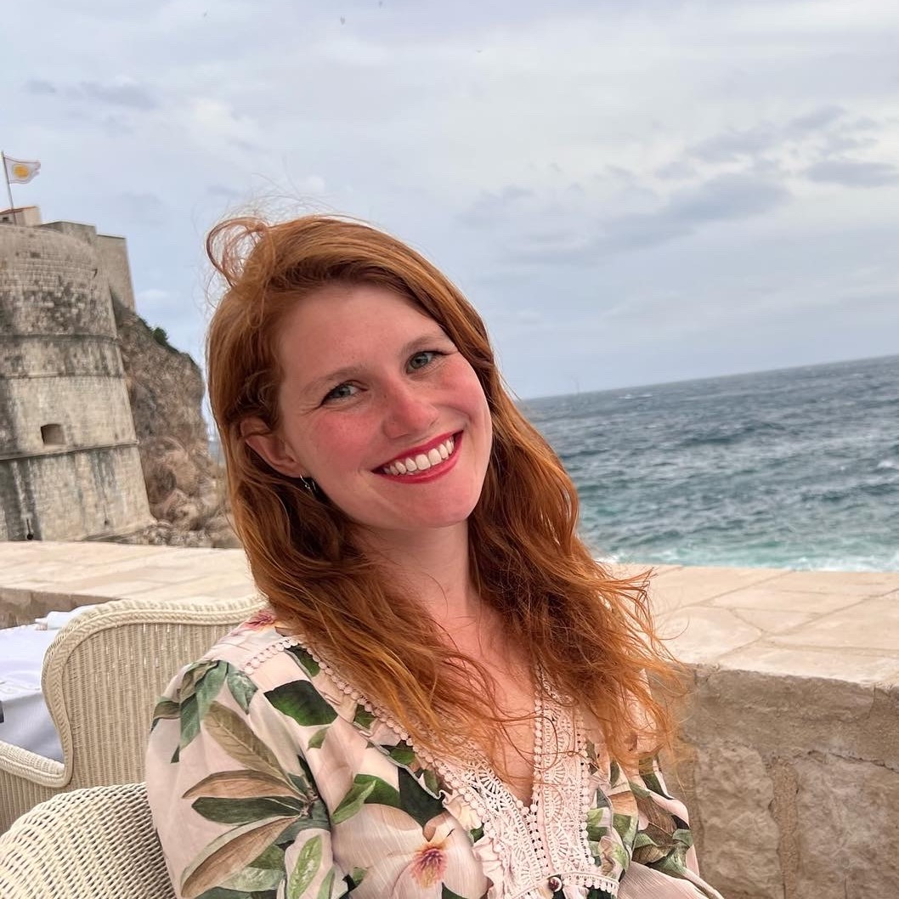

Hello!
I am a developmental cognitive neuroscientist interested in perception and memory in early life. Currently, I am a Postdoctoral Research Scientist working with Dr. Nim Tottenham at Columbia University. Prior to this, I received my Ph.D. in Cognitive Psychology at Yale University under the mentorship of Dr. Nicholas Turk-Browne. My graduate research investigated how infants experience the world — how they segment continuous experience into discrete events, encode new items into memory, and recognize individual faces in their environment — using fMRI as a tool to access the developing mind. In my current research, I am investigating how behavioral and neural mechanisms of perception and memory are impacted by the early caregiving environment.
Outside of the lab, I can be found at the climbing gym, on a yoga mat, with my border collie, or playing board/video games.
Contact me here: tsy2105@columbia.edu